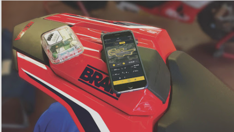

Actualmente hay vehículos como el carro que encuentran implementados sensores que permiten la medición de las
variables relevantes en este y además funcionan como apoyo para conducir, tal y como lo es el sensor de
reversa,
además hay sensores de navegación, sensores para las puertas, medidores de velocidad, entre otras funciones
que
incluso van a la altura de vehículos inteligentes (Mas Informacion) . Sin
embargo, no se puede aplicar los mismos módulos a una motocicleta debido a su gran diferencia en diseño y
funcionamiento.
Es por ello por lo que se plantea una oportunidad para implementar un kit de telemetría, para este segmento de
motos. Actualmente, se cuenta con una motocicleta AKT NKD hibrida en las instalaciones de la universidad
EAFIT,
con la cual se podrán realizar diferentes testeos y estudio de variables a considerar para la propuesta de
producto.
La motocicleta AKT NKD actualmente tiene sensores básicos integrados para la medición de variables claves
(como
la velocidad) y tienen un buen funcionamiento, sin embargo, son invasivos y poco estéticos, por lo que puede
provocar problemas en temas de comodidad del usuario y dificultad de instalación considerando un tema de
producción masiva. Por ello, este estudio está enfocado en el diseño de un kit de telemetría con baja invasión
al vehículo y amigable con el usuario.
El uso de las motocicletas ha venido en aumento en las últimas décadas, al 2019 uno de cada 5,6 colombianos
usa
la motocicleta para transportarse principalmente por temas de facilidad de desplazamiento y economía. En este
sentido se indica además que las motos con mayores compras registradas corresponden a aquellas de bajo
cilindraje debido a su bajo costo, además en las motos matriculadas de presentan principalmente por las marcas
Bajaj, Kawasaki, Kymko, KTM y AKT tal y como se indica en el estudio del sector 2019
(Más
Información).
Figura 1. Matriculas de motocicletas por razón social, 2018
Fuente: Cáculos ANDI con información DIAN
Para mantener un buen funcionamiento de la moto, es necesario tener un control y mantenimiento de esta, no
solamente para sacar el certificado de la revisión técnico-mecánica de la moto cada año.
(Más Información).
Sino
que, para su correcto
funcionamiento, rendimiento de la gasolina y buen estado del motor es necesario tener un control del estado
de
la moto. Para ello es necesario identificar las necesidades de mantenimiento a través del reconocimiento de
las
variables influyentes, sin embargo, en un taller mecánico se realiza dependiendo del estado de este, ya que
las
motos no cuentan con sistema de medición que permita visualizar el estado general y así poder tomar
decisiones
para realizar cambios (o incluso recomendarlos) en una moto que funciona a combustión.
Aunque ya se encuentra una motocicleta con sensores implementados en las instalaciones de la universidad
EAFIT,
estos son sumamente invasivos para la moto y pueden generar un rechazo por las personas en caso de sacar a
la
venta el producto. “La parte estética de una motocicleta es un aspecto altamente importante para el usuario”
(Más Información), por ello,
es
sumamente tener en cuenta que la
idea no afecte la integridad de la moto.
Desarrollar un kit no invasivo de sensores, adecuado para motos de bajo cilindraje (100cc a 150cc), con el fin de generar una herramienta que permita: visualizar variables de operación en tiempo real, determinar los factores que influyen en el consumo energético.
❚ Desarrollar una estrategia de priorización de variables, con ayuda de los parámetros de diseño estipulados, acorde a las necesidades de monitoreo.
❚ Diseñar de sistema de monitoreo que integre determinados sensores con un sistema de envió remoto.
❚ Puesta a punto de la calibración de los sensores de las variables a monitorear.
❚ Diseñar un sistema de recepción remoto y de almacenamiento para los datos.
❚ Diseñar una aplicación que permita visualizar las variables recolectadas y generar percepciones de la operación real (ideal que permita múltiples usuarios y vehículos, así como interacciones con ellos)
❚ Monitorear en tiempo real la operación de la motocicleta.
❚ Escoger los componentes adecuados para el proyecto, de acuerdo a la información recolectada y a las soluciones planteadas en el diseño.
Cloud based activity monitor for human powered vehicle
Es un dispositivo que se instala a una bicicleta, con el fin de recopilar datos sobre posición global (GPS),
hábitos de manejo, uso de patrones y desempeño de la bicicleta. Para posteriormente enviarlos de forma
inalambrica
(Más información).
Electromechanical control system of electric bicycle integrating smart mobile device and cloud services
Sistema de control de bicicletas eléctricas integrando teléfonos inteligentes (Más Información).
Engine System and Method
Un sensor de presión y un sensor de sincronización se encargan de enviarle información a un controlador con el fin de identificar si se lleva a cabo una combustión anormal en el cilindro a causa de presión máxima, tasa de aumento de presión, señal de encendido real o señal del centro de combustión, de tal manera que el controlador pueda activar un indicador de fallo (Más Información).
Smart vehicle
Un método para seguir el camino para vehículos inteligentes (Más Información).
Equipo de telemetría multicanal
Equipo de telemetría multicanal para la conexión de diferentes tipos de sensores extensométricos, piezoeléctricos o resistivos, para el ensayo de partes rotativas, principalmente.
Figura 2. Equipo de telemetría multicanal.
Fuente: Sensing, sensores de medida
Un equipo de telemetría multicanal permite la conexión de múltiples sensores a un equipo, cuya transmisión se
realiza vía radio en tiempo real desde el emisor al receptor. Por tratarse de un equipo de telemetría
multicanal,
hablamos de múltiples emisores con múltiples receptores, modulados en la misma señal de radio.
Cada emisor puede acondicionar diferentes tipos de señales como IEPE, extensométrica, termopares, etc., que son
enviadas a los canales receptores que las demodulan y obtienen por separado, para analizar las variables
correspondientes de vibración, deformación, temperatura, etc.
La serie DT200X del fabricante alemán Datatel es una serie de equipo de telemetría multicanal con entradas
estandarizadas para la realización de pruebas en partes rotativas de máquinas, principalmente.
Este equipo de telemetría multicanal, al igual que el resto de los sistemas de este fabricante, realiza la
transmisión en tiempo real, gracias a su señal analógica modulada en frecuencia, lo que aporta una veracidad y
fiabilidad de los datos del ensayo o aplicación en cuestión.
Seleccione entre una amplia gama de diferentes tipos y diseños de transmisores para medir diferentes tipos de
señales de sensores con un alto ancho de banda de señal. Adecuado para una amplia gama de aplicaciones
exigentes.
Su formato en rack permite a este equipo de telemetría crear todo tipo de conjuntos desde pocos a cientos de
canales, para las necesidades de cada ensayo.
Características principales del equipo de telemetría multicanal:
❚ Transmisión de datos y alimentación sin contacto.
❚ Tecnología robusta, probada en el campo y laboratorio.
❚ Conexión directa de sensores como bandas extensométricas, termopares, RTD, sensores de presión, IEPE y sensores piezoeléctricos, etc.)
❚ Se puede utilizar en condiciones ambientales extremas (rango de temperatura de funcionamiento: 40 a + 125 ° C, carga g hasta 150,000 g, resistente al aceite y la humedad).
❚ Alto ancho de banda de señal por canal, hasta 96 kHz (-3dB).
❚ Transmisión de datos sincrónica.
❚ Alto nivel de precisión de medición y calidad de señal.
❚ Transmisores de telemetría controlados a distancia con funciones de diagnóstico integradas.
❚ Módulos transmisores de telemetría miniaturizados. integradas.
❚ Componentes electrónicos giratorios encerrados en carcasas metálicas resistentes, resistentes a las influencias ambientales. integradas.
❚ Receptores de telemetría en tecnología modular de 19″ o tipos compactos para aplicaciones móviles. integradas.
❚ Salidas de señal analógica o digital estandarizadas. integradas.
❚ Los sistemas externos de adquisición de datos se pueden conectar directamente. integradas.
❚ Concepto de doble fuente de alimentación, fuente de alimentación inductiva o alternativamente por batería. integradas.
❚ Opción de movimiento relativo significativo entre el rotor y el estátor sin afectar los datos medidos.
❚ Enfoque de sistema llave en mano para garantizar una puesta en marcha y manejo convenientes
RaceBox
Figura 3. RaceBox.
Fuente: Articulo disponible en Amazon.
RaceBox es la forma más moderna y precisa de medir las estadísticas de rendimiento de su vehículo. Utilizando el GPS de última generación que proporciona una precisión y posicionamiento excepcionales de tan solo 10" funcionando en la antena interna. Medir 0-60 mp/h de aceleración, 1/4 milla de veces o vueltas alrededor de su circuito favorito nunca ha sido tan fácil.
Especificaciones:
❚ ódulo- Antena GPS externa interna y opcional
❚ Módulo WiFi - 802.11 b/g/n
❚ Pantalla LCD a color de 2,4"
❚ Batería LiPo de 2000 mAh. Hasta 8 horas de uso
❚ USB Tipo C. 2 horas de tiempo de carga
❚ Memoria Flash capaz de almacenar hasta 400 sesiones de carreras
❚ Acelerómetro de alta precisión
PUSH SmartGauge Motorcycle Trackday Telemetry System
Figura 4. SmartGauge.
Fuente: Push sitio web.
El PUSH SmartGauge para motocicletas es un registrador de datos de pista de carreras y una herramienta de entrenamiento de alta tecnología que proporciona a la perfección telemetría de nivel profesional y tecnología de visualización de vueltas en 3D a los entusiastas de los circuitos y los corredores de clubes. Después de una extensa investigación, desarrollo y pruebas de pista en el mundo real.
BRAIN Dose Performance Tracking Telemetry System for Motorcycles
Brain Dose es un dispositivo inalambrico y no intrusivo que se adiere a la motocicleta para sensar diferentes varaibles, cuenta con un procesador y un GPS de gran rendimiento que le permite tener una prescion superior, ademas integra una bateria que garantiza un dia entero de grabacion de datos complementado con 4GB de memoria. Para transmitir toda esta informacion ofrece comunicacion en vivo por medio de WIFI y Bluetooth 4.0. En cuanto a las especificaciones fisicas ofrece una carcasa en policarbonato IP 65 resistente a los golpes y el polvo.
Trail tech vapor
El panel de informacion Vapor es una opción popular para los entusiastas de la carretera y fuera de ella. La gran pantalla con gráficos de barras del tacómetro digital de Vapor es fácil de leer. Con un tamaño adecuado de 4.2 x 2.3 pulgadas, Vapor es perfecto para todo tipo de conducción como cross country, trail o en la pista. Las características principales incluyen un gráfico de RPM y lectura de velocidad, con muchos más datos integrados. En la parte superior, las luces LED programables parpadean cuando es el momento de cambiar de marcha o durante un evento como exceso de temperatura.
En la página Knowledge, se encuentra publicado un artículo nombrado “Monitoreo de condición en motores de
combustión interna mono cilíndrico con base en adquisición y procesamiento de señales experimentales” escrito por
autores pertenecientes a las universidades Universidad Tecnológica de Pereira y Universidad Católica de Pereira,
donde plasman el proceso y resultados del monitoreo de un motor de combustión interna (MCI) mono cilíndrico
alimentado por combustible tipo diésel.
Para el monitoreo de este motor, los investigadores obtuvieron señales de vibraciones provenientes del bloque del
motor, presión en cámara y velocidad de rotación del cigüeñal. Estas señales fueron analizadas y procesadas
mediante FFT y regresión rígida.
El método de recolección de estas señales fue por medio de sensores experimentales (sensores de velocidad (sensor
inductivo combinado con una rueda fónica de 60 dientes), presión y vibración (acelerómetro)), los cuales se
ubicaron en la respectiva zona de análisis y se conectaron a un módulo de adquisición de datos para transmitirlos
hacia un computador.
❚ Monitoreo de condición en motores de combustión interna mono cilíndrico con base en adquisición y procesamiento de señales experimentales.
Diseño de un sistema de adquisición de datos mediante un sensor de presión para medir la presión de la cámara de combustión, un sensor inductivo combinado con una rueda fónica de 60 dientes para monitorear velocidad del cigüeñal y un acelerómetro para medir las vibraciones en la culata del motor, todo esto implementado en un motor Diesel mono cilíndrico y con ayuda de un módulo de adquisición de datos que transmite la información recolectada hacia un computador.
❚ Implementation of Motorcycle Monitoring Using Bluetooth with an Android-Based Microcontroller Using Arduino.
El diseño de un control de motor se ha implementado con un microcontrolador Arduino y se basa en Android para diseñar un control motor ON/OFF en una motocicleta a través de bluetooth; de esta manera se puede controlar el motor de forma remota o cerrar. El protocolo de comunicación de datos del equipo es a través de bluetooth instalado en la motocicleta usando 6 o 12 voltios para sistemas de encendido, arrancadores, luces y otros componentes eléctricos.
❚ A robust method for collecting and processing the on-road instantaneous data of fuel consumption and speed for motorcycles.
Modelo de consumo de combustible: "Requiere la medición de datos en determinadas condiciones para obtener una alta precisión del resultado" Esto indica la necesidad de crear un dispositivo que registre el consumo de combustible en tiempo real y velocidad en carretera. Una manera de determina la velocidad es en función de la velocidad de rotación de la rueda y su radio y la tasa de consumo de combustible midiendo el pulso de inyección de duración.
❚ Pothole detection system design with proximity sensor to provide motorcycle with warning system and increase road safety driving.
El estado de la carretera en Antioquia y muchos lugares de nuestro país determina un peligro para los distintos conductores, lo cual, según muchas cifras de la gobernación y la alcaldía, determinan un crecimiento en accidentes debido a estas condiciones. Para evitar que ocurran accidentes se puede implementar un sensor de proximidad para la detección de baches en la motocicleta, en este sistema se utiliza una cámara y el proceso de imágenes digitales.
❚ Evolving End to End Telemetry Systems to Meet the Challenges of Softwarized Environments
En la actualidad los datos obtenidos con el fin de realizar telemetría se tratan como datos separados y por lo tanto se envían todos estos datos. Lo que puede resultar en mayor poder computacional. En esta conferencia se explora la posibilidad de tratar los datos por jerarquías y usando modelos de machine learning para realizar un preprocesamiento de estos datos, antes de enviarlos inalámbricamente.
❚ Vehicle engine idle speed control.
Un sensor de velocidad del vehículo detecta una velocidad de rotación de una rueda trasera. Una válvula de mariposa está colocada en una ubicación aguas abajo de una tubería de admisión. Un dispositivo de control de velocidad en vacío controla la cantidad de aire que fluye a través del tubo de admisión para realizar un control de velocidad en vacío. Una ECU detecta una anomalía del dispositivo de control de velocidad en vacío basándose en la presión de la tubería de admisión. La ECU impide que la velocidad de rotación del motor aumente cuando se determina una anomalía del dispositivo de control de la velocidad de ralentí.
Uso de Raspberry Pi para obtener datos de bicicletas y motocicletas.
En Joanneum University of Applied Sciences en Graz, Austria. Se realiza en 2015 un proyecto de obtener datos de una bicicleta para su posterior análisis. Estos datos incluyen radio de giro, velocidad, aceleración y posición de GPS. Este proyecto se plantea realizar utilizando una Raspberry Pi para la recolección de datos.
Sensores
Hall effect sensor: usado para la recolección de los datos de la velocidad. Este sensor envía una señal digital
la cual se puede leer directamente por el Raspberry Pi. Uno de los grupos utilizo directamente la señal del ABS
para recolectar estos datos.
PC20BU rotary potentiometer: usado para medir los ángulos del manubrio, luego un convertidor de análogo a digital
(ADC) fue usado para convertir la señal y que el Raspberry Pi pueda leerla.
GPS sensor: usado para tomar los datos de la posición de la bicicleta o motocicleta, el utilizado por los equipos
fue el Adafruit Ultimate GPS Breakout, ya que resulto ser el mejor en costo y precisión.
Programación
Los proyectos fueron programados utilizando Python ya que se utilizó el Raspberry Pi y este trae paquetes disponibles para controlar los pines GPIO.
Transmisión de datos
Los datos obtenidos terminan en archivos de texto, los cuales el Raspberry Pi los hace disponibles para el análisis em otro computador por medio de un Lighttpd web server. Se uso un smartphone como un punto de acceso móvil. El Raspberry Pi y el computador fueron configurados de tal forma que se conecten automáticamente por medio de DHCP con la red WiFi.
Otro grupo uso el Raspberry Pi como un punto de conexión inalámbrico. (Más Información).
En este proyecto debido a que ya se cuenta con una moto hibrida en las instalaciones de la universidad, se desea analizar la motocicleta con el fin de identificar el espacio disponible y evaluar posibles montajes para los sensores.
Al analizarla nos encontramos que hay varios sensores ya instalados, por lo que es posible evaluar su efectividad y tenerlos en cuenta para la obtención de datos para la telemetría.
En las siguientes ilustraciones mostramos algunos sensores ya instalados:
Sensor de Embrague
Sensor de posición del acelerador
Sensor de velocidad
Los demás sensores, el computador (Raspberry Pi, o Arduino) y los transmisores inalámbricos se acomodarán debajo del asiento.
Nuestro cliente es Santiago Echavarría Correa quien está trabajando en el proyecto Energética 2030 sobre movilidad sostenible y desarrollo un Kit de conversión a tracción eléctrica para movilidad terrestre y requiere Diseñar y fabricar un equipo de telemetría para las variables estándar de la motocicleta de combustión interna.
A continuación, se muestra la tabla PDS.
| Importancia | Categoria del requerimiento | Necesidad | Requerimiento | Variable | Unidades | Valor | Prioridad | Orígen | Verificación |
|---|---|---|---|---|---|---|---|---|---|
| 3 | PROCESS | Qué sea una instalación rápida | Tiempo de instalación | Tiempo | min | t< 60 | Deseo | Equipo | Cronómetro |
| 5 | PROCESS | Qué no se hagan modificaciones fisicas a la motocicleta | No es intrusivo | Numero de modificaciones | Unidades | M< 2 | Demanda | Cliente | Número de modificaciones |
| 2 | SIZE | Qué no ocupe mucho espacio | Es compacto y adaptable adecuado para las motos de bajo cc | Volumen | m^3 | V< 0.15m^3 | Demanda | Cliente | Calibrador |
| 4 | PROCESS | Qué envie los datos de forma inalámbrica | Cuenta con un dispositivo IoT | Frecuencia | GHz | 400-500 GHz | Demanda | Cliente | Transferencia exitosa |
| 2 | WEIGHT | Qué no sea muy pesado | El peso de los sensores y controladores es adecuado para las motos de bajo cc | Masa | g | w< 1000g | Deseo | Equipo | Balanza |
| 4 | DATA | Qué mida las revoluciones del motor | Cuenta con un sensor de rpm | Pulsos | rpm | 0-12000 | Demanda | Cliente | Light beam measure tester |
| 3 | MAINTENANCE | Que las piezas se puedan reemplazar facilmente | Los componentes son asequibles | Costo | $ | C < 200000 | Demanda | Equipo | Cotización y disponibilidad |
| 4 | DATA | Qué pueda medir el consumo de combustible | Cuenta con un sensor de nivel de combustible | Volumen por distancia recorrida | gal/km | - | Demanda | Cliente | Recipiente |
| 4 | DATA | Qué mida la aceleración | Cuenta con un acelerómetro | Aceleración | m/s^2 | - | Demanda | Cliente | Acelerómetro |
| 3 | DATA | Qué mida el accionamiento del frenado | Switch de freno | On/Off | - | - | Demanda | Cliente | Multimétro |
| 3 | DATA | Qué mida el angulo de la moto con respecto a la tierra | Cuenta con nivel | Ángulo | Grados | 0-180 | Demanda | Equipo | Goniométro |
| 3 | DATA | Qué mida la posicion del acelerador | Cuenta con TPS | Ángulo | Grados | 0-180 | Demanda | Cliente | Goniométro |
| 2 | DATA | Qué se sepa cuando la moto esta encendida | Cuenta con Sensor de encendio | On/Off | - | - | Demanda | Cliente | Multimétro |
| 3 | DATA | Qué se sepa la posición de la moto | Cuenta con dispositivo GPS | Ubicación | Lat/Long | (-90)-90 (-180)-180 | Demanda | Cliente | GPS |
| 4 | COST | Qué no sea muy caro | El dispositivo es de costo ideal para vehículos económicos (bajos cilindrajes) | Costo | $ | $< 500000 | Deseo | Cliente | Cotización del proyecto |
Se busca implementar un sistema de sensores no invasivo, que recolecten los datos más significativos del funcionamiento de una motocicleta de combustión interna, teniendo en cuenta las variables del entorno y tener datos que una vez procesados puedan ser utilizados para mejorar el rendimiento de la moto, utilizando microcontroladores que permitan la extracción de la data y la transmisión inalámbrica de estos, entre ellos encontramos( Raspberry Pi, Arduino u otros chips ), los cuales son compatibles con una amplia gama de sensores. Los datos recolectados se pueden almacenar en una base de datos de uso libre como SQLite, MySQL o Mongo DB, para posteriormente mostrarlos luego en una aplicación móvil, la cual se puede realizar con el framework Flutter, que permite desarrollar aplicaciones nativas tanto para sistemas como Android y IOS.
Área encargada:
Cualidades: Proactivo, deseo de aprender, persistente, constante
Motivación: Robótica y automatización
Experiencia: Integrante del semillero ARES y exintegrante del carro solar Kratos
Área encargada:
Cualidades: Propositivo, abierto al cambio, conciliador, bueno para delegar y
trabajar en equipo, curioso.
Motivación: Las cosas bien hechas, bonitas y consientes.
Experiencia: Diseño y desarrollo de un spray dryer para fragancias, Diseño y
manufactura de Roadbooks para rally raid, Asistente de ing. en i3D.
Área encargada:
Cualidades: Resolución de problemas, trabajo en equipo, deseo de aprender
Motivación: Automatización y funciones de máquinas
Experiencia: Exintegrante de Condor Hyperloop EAFIT
Área encargada:
Cualidades: Meticuloso, Creativo, Pensamiento critico
Motivación: Iot, robótica
Experiencia: Aplicativos web, productos iot
Área encargada:
Cualidades: Trabajo en equipo, resiliencia, proactivo, diversidad de conocimientos
Motivación: Robótica, Iot, Arduino, Labview
Experiencia: Experiencia de un año como progrmador en Python y JavaScript, dos años de
experiencia con proyectos en Arduino